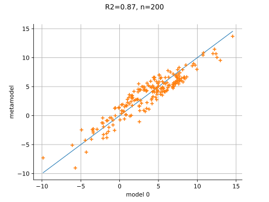
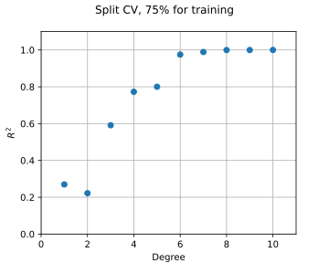
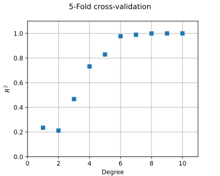
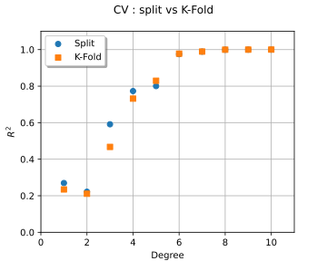

Note
Go to the end to download the full example code.
Polynomial chaos expansion cross-validation¶
Introduction¶
In this example, we show how to perform the cross-validation of the Ishigami model using polynomial chaos expansion. More precisely, we use the methods suggested in [muller2016], chapter 5, page 257. We make the assumption that a dataset is given and we create a metamodel using this data. Once done, we want to assess the quality of the metamodel using the data we have. Another example of this method is presented in Compute leave-one-out error of a polynomial chaos expansion.
In this example, we compare two methods:
split the data into two subsets, one for training and one for testing,
use k-fold validation.
The split of the data is performed by the compute_R2_score_by_splitting function below.
It uses 75% of the data to estimate the coefficients of the metamodel (this is the training step)
and use 25% of the data to estimate the ![R^2]() score (this is the validation step).
To do this, we use the split method of the
score (this is the validation step).
To do this, we use the split method of the Sample.
The K-Fold validation is performed by the compute_R2_score_by_kfold function below.
It uses the K-Fold method with ![k = 5]() .
The code uses the
.
The code uses the KFoldSplitter class, which computes the appropriate indices.
Similar results can be obtained with LeaveOneOutSplitter at a higher cost.
This cross-validation method is used here to see which polynomial degree
leads to an accurate metamodel of the Ishigami test function.
import openturns as ot
import openturns.viewer as otv
from openturns.usecases import ishigami_function
Define helper functions¶
The next function creates a polynomial chaos expansion from a training data set and a total degree.
def compute_sparse_least_squares_chaos(
inputTrain, outputTrain, multivariateBasis, totalDegree, distribution
):
"""
Create a sparse polynomial chaos based on least squares.
* Uses the enumerate rule in multivariateBasis.
* Uses the LeastSquaresStrategy to compute the coefficients based on
least squares.
* Uses LeastSquaresMetaModelSelectionFactory to use the LARS selection method.
* Uses FixedStrategy in order to keep all the coefficients that the
LARS method selected.
Parameters
----------
inputTrain : Sample
The input design of experiments.
outputTrain : Sample
The output design of experiments.
multivariateBasis : multivariateBasis
The multivariate chaos multivariateBasis.
totalDegree : int
The total degree of the chaos polynomial.
distribution : Distribution.
The distribution of the input variable.
Returns
-------
result : PolynomialChaosResult
The estimated polynomial chaos.
"""
selectionAlgorithm = ot.LeastSquaresMetaModelSelectionFactory()
projectionStrategy = ot.LeastSquaresStrategy(
inputTrain, outputTrain, selectionAlgorithm
)
enumerateFunction = multivariateBasis.getEnumerateFunction()
multivariateBasisSize = enumerateFunction.getBasisSizeFromTotalDegree(totalDegree)
adaptiveStrategy = ot.FixedStrategy(multivariateBasis, multivariateBasisSize)
chaosAlgo = ot.FunctionalChaosAlgorithm(
inputTrain, outputTrain, distribution, adaptiveStrategy, projectionStrategy
)
chaosAlgo.run()
result = chaosAlgo.getResult()
return result
The next function computes the score by splitting the data set
into a training set and a test set.
def compute_R2_score_by_splitting(
inputSample,
outputSample,
multivariateBasis,
totalDegree,
distribution,
split_fraction=0.75,
):
"""
Compute R2 score by splitting into train/test sets.
Parameters
----------
inputSample : Sample(size, input_dimension)
The X dataset.
outputSample : Sample(size, output_dimension)
The Y dataset.
multivariateBasis : multivariateBasis
The multivariate chaos multivariateBasis.
totalDegree : int
The total degree of the chaos polynomial.
distribution : Distribution.
The distribution of the input variable.
split_fraction : float, in (0, 1)
The proportion of the sample used in the training.
Returns
-------
r2Score : float
The R2 score.
"""
training_sample_size = inputSample.getSize()
inputSampleTrain = ot.Sample(inputSample) # Make a copy
outputSampleTrain = ot.Sample(outputSample)
split_index = int(split_fraction * training_sample_size)
inputSampleTest = inputSampleTrain.split(split_index)
outputSampleTest = outputSampleTrain.split(split_index)
chaosResult = compute_sparse_least_squares_chaos(
inputSampleTrain,
outputSampleTrain,
multivariateBasis,
totalDegree,
distribution,
)
metamodel = chaosResult.getMetaModel()
metamodelPredictions = metamodel(inputSampleTest)
val = ot.MetaModelValidation(outputSampleTest, metamodelPredictions)
r2Score = val.computeR2Score()
return r2Score
The next function computes the score by K-Fold.
def compute_R2_score_by_kfold(
inputSample,
outputSample,
multivariateBasis,
totalDegree,
distribution,
kParameter=5,
):
"""
Compute R2 score by KFold.
Parameters
----------
inputSample : Sample(size, input_dimension)
The X dataset.
outputSample : Sample(size, output_dimension)
The Y dataset.
multivariateBasis : multivariateBasis
The multivariate chaos multivariateBasis.
totalDegree : int
The total degree of the chaos polynomial.
distribution : Distribution.
The distribution of the input variable.
kParameter : int
The parameter K.
Returns
-------
r2Score : Point(outputDimension)
The R2 score for each output dimension.
"""
#
sampleSize = inputSample.getSize()
outputDimension = outputSample.getDimension()
splitter = ot.KFoldSplitter(sampleSize, kParameter)
r2_score_sample = ot.Sample(0, outputDimension)
for indicesTrain, indicesTest in splitter:
inputSampleTrain, inputSampleTest = (
inputSample[indicesTrain],
inputSample[indicesTest],
)
outputSampleTrain, outputSampleTest = (
outputSample[indicesTrain],
outputSample[indicesTest],
)
chaosResultKFold = compute_sparse_least_squares_chaos(
inputSampleTrain,
outputSampleTrain,
multivariateBasis,
totalDegree,
distribution,
)
metamodelKFold = chaosResultKFold.getMetaModel()
predictionsKFold = metamodelKFold(inputSampleTest)
val = ot.MetaModelValidation(outputSampleTest, predictionsKFold)
r2_local = val.computeR2Score()
r2_score_sample.add(r2_local)
r2Score = r2_score_sample.computeMean()
return r2Score
Define the training data set¶
We start by generating the input and output samples. We use a sample size equal to 200.
im = ishigami_function.IshigamiModel()
im.distribution.setDescription(["X0", "X1", "X2"])
im.model.setOutputDescription(["$Y$"])
ot.RandomGenerator.SetSeed(0)
sample_size = 200
X = im.distribution.getSample(sample_size)
print("Input sample:")
X[:5]
Input sample:
Y = im.model(X)
Y.setDescription(["Y"])
print("Output sample:")
Y[:5]
Output sample:
We compute a polynomial chaos decomposition with a total degree equal to 5. In order to reduce the number of coefficients, the compute_sparse_least_squares_chaos function creates a sparse chaos using regression and the LARS method.
dimension = im.distribution.getDimension()
multivariateBasis = ot.OrthogonalProductPolynomialFactory(
[im.distribution.getMarginal(i) for i in range(dimension)]
)
totalDegree = 5 # Polynomial degree
result = compute_sparse_least_squares_chaos(
X, Y, multivariateBasis, totalDegree, im.distribution
)
result
Get the metamodel.
metamodel = result.getMetaModel()
Validate the metamodel from a test set¶
In order to validate our polynomial chaos, we generate an extra pair of
input / output samples and use the MetaModelValidation class.
test_sample_size = 200 # Size of the validation design of experiments
inputTest = im.distribution.getSample(test_sample_size)
outputTest = im.model(inputTest)
metamodelPredictions = metamodel(inputTest)
validation = ot.MetaModelValidation(outputTest, metamodelPredictions)
r2Score = validation.computeR2Score()[0]
graph = validation.drawValidation()
graph.setTitle("R2=%.2f, n=%d" % (r2Score, test_sample_size))
view = otv.View(graph)

The plot shows that the score is relatively high and might be satisfactory for some purposes. There are however several issues with the previous procedure:
It may happen that the data in the validation sample with size 200 is more difficult to fit than the data in the training dataset. In this case, the
score may be pessimistic.It may happen that the data in the validation sample with size 200 is less difficult to fit than the data in the validation dataset. In this case, the
score may be optimistic.We may not be able to generate an extra dataset for validation. In this case, a part of the original dataset should be used for validation.
The polynomial degree may not be appropriate for this data.
The dataset may be ordered in some way, so that the split is somewhat arbitrary. One solution to circumvent this is to randomly shuffle the data. This can be done using the
KPermutationsDistribution.
The K-Fold validation aims at solving some of these issues, so that all the
available data is used in order to estimate the score.
Compute the R2 score from a test set¶
In the following script, we compute the score associated with each polynomial degree from 1 to 10.
split_fraction = 0.75
print(f"Split cross-validation, with {100 * split_fraction:.0f}% for training")
degree_max = 10
degree_list = list(range(1, 1 + degree_max))
n_degrees = len(degree_list)
scoreSampleSplit = ot.Sample(len(degree_list), 1)
for i in range(n_degrees):
totalDegree = degree_list[i]
scoreSampleSplit[i] = compute_R2_score_by_splitting(
X, Y, multivariateBasis, totalDegree, im.distribution, split_fraction
)
print(f"Degree = {totalDegree}, score = {scoreSampleSplit[i, 0]:.4f}")
Split cross-validation, with 75% for training
Degree = 1, score = 0.2696
Degree = 2, score = 0.2219
Degree = 3, score = 0.5912
Degree = 4, score = 0.7729
Degree = 5, score = 0.8002
Degree = 6, score = 0.9751
Degree = 7, score = 0.9890
Degree = 8, score = 0.9995
Degree = 9, score = 0.9997
Degree = 10, score = 1.0000
graph = ot.Graph(
f"Split CV, {100 * split_fraction:.0f}% for training", "Degree", "$R^2$", True
)
cloud = ot.Cloud(ot.Sample.BuildFromPoint(degree_list), scoreSampleSplit)
cloud.setPointStyle("circle")
graph.add(cloud)
boundingBox = ot.Interval([0.0, 0.0], [1 + degree_max, 1.1])
graph.setBoundingBox(boundingBox)
view = otv.View(graph, figure_kw={"figsize": (5.0, 4.0)})

We see that the polynomial degree may be increased up to degree 7,
after which the score does not increase much.
Compute the R2 score from K-Fold cross-validation¶
One limitation of the previous method is that the estimate of the
may be sensitive to the particular split of the dataset.
The following script uses 5-Fold cross validation to estimate the
score.
kParameter = 5
print(f"{kParameter}-Fold cross-validation")
scoreSampleKFold = ot.Sample(len(degree_list), 1)
for i in range(n_degrees):
totalDegree = degree_list[i]
scoreSampleKFold[i] = compute_R2_score_by_kfold(
X, Y, multivariateBasis, totalDegree, im.distribution, kParameter
)
print(f"Degree = {totalDegree}, score = {scoreSampleKFold[i, 0]:.4f}")
5-Fold cross-validation
Degree = 1, score = 0.2347
Degree = 2, score = 0.2110
Degree = 3, score = 0.4674
Degree = 4, score = 0.7316
Degree = 5, score = 0.8296
Degree = 6, score = 0.9777
Degree = 7, score = 0.9893
Degree = 8, score = 0.9995
Degree = 9, score = 0.9998
Degree = 10, score = 1.0000
graph = ot.Graph(f"{kParameter}-Fold cross-validation", "Degree", "$R^2$")
cloud = ot.Cloud(ot.Sample.BuildFromPoint(degree_list), scoreSampleKFold)
cloud.setPointStyle("square")
graph.add(cloud)
graph.setBoundingBox(boundingBox)
view = otv.View(graph, figure_kw={"figsize": (5.0, 4.0)})

The conclusion is similar to the previous method.
Compare the two cross-validation methods.
graph = ot.Graph("CV : split vs K-Fold", "Degree", "$R^2$")
cloud = ot.Cloud(ot.Sample.BuildFromPoint(degree_list), scoreSampleSplit)
cloud.setPointStyle("circle")
cloud.setLegend("Split")
graph.add(cloud)
cloud = ot.Cloud(ot.Sample.BuildFromPoint(degree_list), scoreSampleKFold)
cloud.setPointStyle("square")
cloud.setLegend("K-Fold")
graph.add(cloud)
graph.setLegendPosition("upper left")
graph.setBoundingBox(boundingBox)
view = otv.View(graph, figure_kw={"figsize": (5.0, 4.0)})
# sphinx_gallery_thumbnail_number = 4

Conclusion¶
When we select the best polynomial degree which maximizes the score,
the danger is that the validation set is used both for computing the and to maximize it:
hence, the score may be optimistic.
In [muller2016], chapter 5, page 269, the authors advocate the split of the dataset into three subsets:
the training set,
the validation set,
the test set.
When selecting the best parameters, the validation set is used.
When estimating the score with the best parameters, the test set is used.
otv.View.ShowAll()